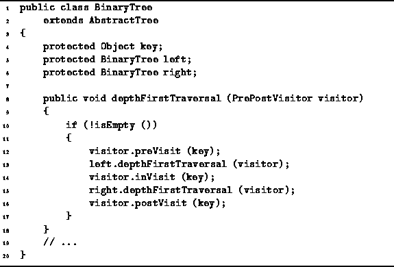

Data Structures and Algorithms
with Object-Oriented Design Patterns in Java
Data Structures and Algorithms
with Object-Oriented Design Patterns in Java
Program  defines the depthFirstTraversal
method of the BinaryTree class.
This method supports all three tree traversal methods--preorder, inorder, and postorder.
The implementation follows directly from the definitions
given in Section .
The traversal is implemented using recursion.
That is, the method calls itself recursively
to visit the subtrees of the given node.
Note that the recursion terminates properly when an empty tree is encountered
since the method does nothing in that case.
defines the depthFirstTraversal
method of the BinaryTree class.
This method supports all three tree traversal methods--preorder, inorder, and postorder.
The implementation follows directly from the definitions
given in Section .
The traversal is implemented using recursion.
That is, the method calls itself recursively
to visit the subtrees of the given node.
Note that the recursion terminates properly when an empty tree is encountered
since the method does nothing in that case.

Program: BinaryTree class depthFirstTraversal method.
The traversal method takes as its argument
any object that implements the PrePostVisitor interface
defined in Program .
As each node is ``visited'' during the course of the traversal,
the preVisit, inVisit, and postVisit
methods of the visitor are invoked on the object contained in that node.
 Copyright © 1998 by Bruno R. Preiss, P.Eng. All rights reserved.
Copyright © 1998 by Bruno R. Preiss, P.Eng. All rights reserved.